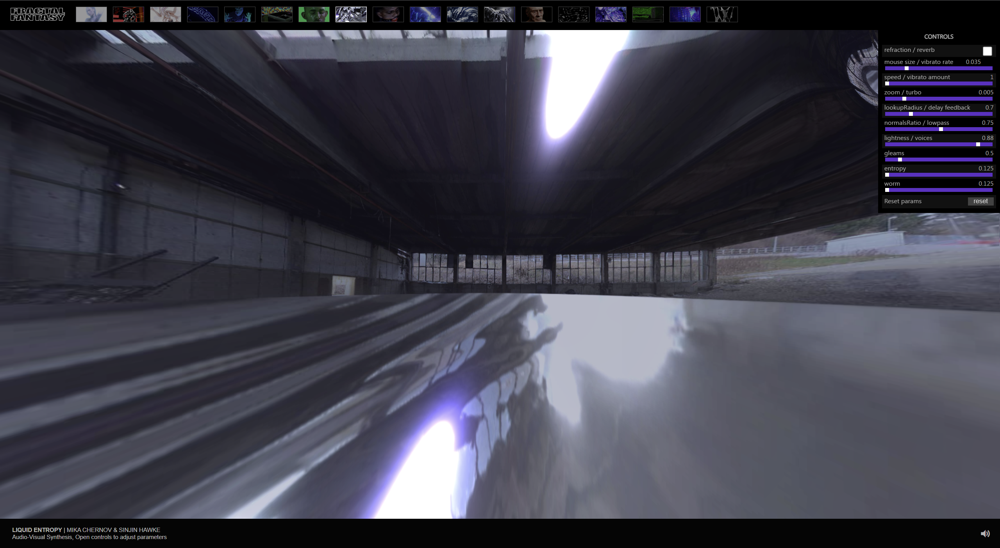
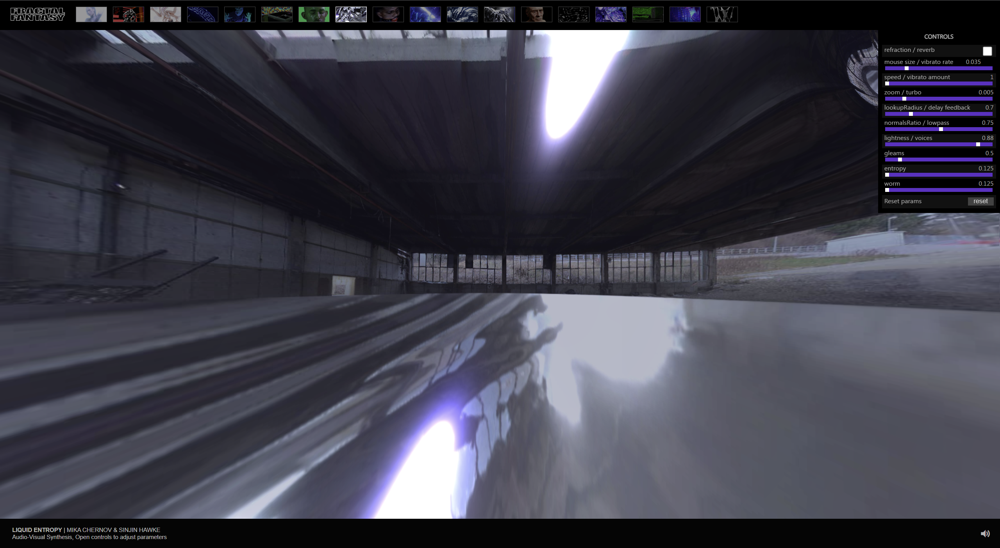

As this website chose to set the full window as the size to display the project,
the authors want draw our attention to this big space they left, which is a HDRI image but have a fisheye lens effect
on it, furthermore, using this effect generate an one point perspective that can make the scene more immersive.
So, the first thing I paid attention to is the scene itself, which is the fisheye HDRI image.
- 1.drag the cursor accidently
- 2.found the interactives between the cursor and the project
- 3.unmuted the project and noticed that the tones and keys of the project is changing based on cursor's motion.
- 3.keep moving the mouse and try to figure out how they actually interacting, like: a.if the 'liquid flows' or 'liquid ripples'follow the direction of mouse moving? b.if the image behind the scene is changing or not. c.the lumming is changing in the scene as the flows' shape are changing instantly, is the light setting in the scene changing instantly as well? d.what is the connection or regime between the sound changing and cursor's motion, is it based on the motion's directions or it's based on the current location of the cursor.
- 4.start focus on the 'workplace' at the top-right side of the screen where have a lots of bars and figures for audiences to paly around with.
- 5.start adjusting different figures on the table
I reckon that I spend the most of the time on adjusting the different figures and elements on the
table, as they have 9 different features that not only take control of the
visual interactives but also audio effects. And it is sort of difficult for some people who don't have
experience with physics as they using terms like "entropy", adn "lowpass". So I think it is the part where people
would spend most time on.
Using mouse to interactive with the liquid and the workspace, most of the motion is moving cursor and click.
As this is kind of conceptual and experimental project, I reckon the primary goal of this interactive
experience is to find a way that connect the experimental audio effects with the physical interactives. In other
word, they try to find a aesthetic way to visualize the processing of experimental audio effects.
Additionally, they could expand the experiences across different divices from mobile divices to computers by this web based project.
By using the Liquid effects to illustrates the changing of sounds. they using visual effects and the adjustable features to help people get
a better understand of the interactives between sonic part and visual part.
From my perspective, the interacting experience should be less interesting as before. Because even the project
has an interactive interface and have several features that can adjust to change the ripples' shape or volume. There is still
limitaitons here, after playing sround a few times, I think I am not that excited and motivated to interact with it.
So I think my impression of the website is kind of nagative.
I think is play with the workspace they offer, which you can find 9 elements to play with the visual effects feedback. In my opinion, I think they want users
focus on the visual effects changing and sounds effects by adjusting the differnet figures reapeatly. As the visaul effects feedback screen
takes the marjority of the windows, and the workplace set at the top-right side as a sidebar.